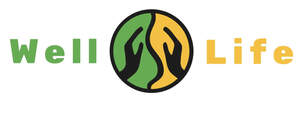

Trade Mark Journal No.2025/035 29 August 2025
UK00004218716 13 June 2025 (41,44)

- Class 41
- Health education; Health and wellness training; Physical health education; Health club services [health and fitness training]; Health and fitness training; Education in the field of occupational health and safety; Health club [fitness] services; Provision of educational health and fitness information; Health club services; Education services relating to health; Providing of training in the field of health care and nutrition; Health club services [exercise]; Education and training in the field of occupational health and safety; Education and training services in the field of occupational health and safety; Training services relating to health and safety; Training services relating to occupational health; Physical fitness education services; Provision of educational services relating to health; Education services relating to physical fitness; Vocational education relating to avoidance of health related problems; Medical education services; Education services relating to nutrition.
- Class 44
- Health care; Health care in the nature of health maintenance organizations; Health counseling; Health care relating to naturopathy; Public health counseling; Health counselling; Mental health screening services; Health care relating to hydrotherapy; Health screening; Health care relating to acupuncture; Medical health assessment services; Health care relating to homeopathy; Home health care services; Health centers; Health consultancy; Health clinic services [medical]; Health care relating to osteopathy; Health care consultancy services [medical]; Health centres; Health clinic services; Occupational health consultancy; Health spa services; Consultancy relating to health care; Provision of health care services; Health assessment services; Managed health care services; Health care relating to chiropraxis; Health screening services; Advisory services relating to health care; Health care relating to relaxation therapy; Health center services; Health hydro services; Professional consultancy relating to health care; Health care relating to therapeutic massage; Consulting services relating to health care; Health risk assessment; Health centre services; Health care relating to remedial exercise; Consultancy services relating to health care; Information services relating to health care; Provision of health information; Provision of health care services in domestic homes; Health care services offered through a network of health care providers on a contract basis; Advice relating to the personal welfare of elderly people [health]; Healthcare; Advisory services relating to health; Health assessment surveys; Medical and healthcare services; Health-care; Providing health information; Medical and healthcare clinics; Health risk assessment surveys; Health advice and information services; Professional consultancy relating to health; Information relating to health; Preparation of reports relating to health care matters; Human hygiene and beauty care; Human healthcare services; Medical screening services relating to cardiovascular disease; Providing health care information by telephone; Health-care services; Exercise facilities for health rehabilitation purposes (Provision of -); Healthcare services; Medical services for the diagnosis of conditions of the human body.
Well Life Phyio Therapy